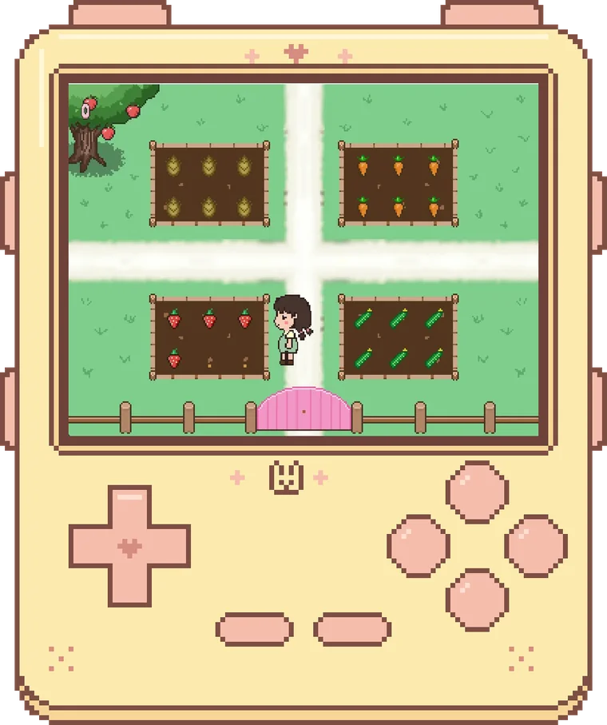
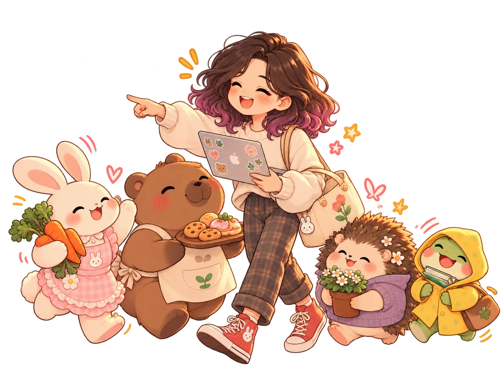
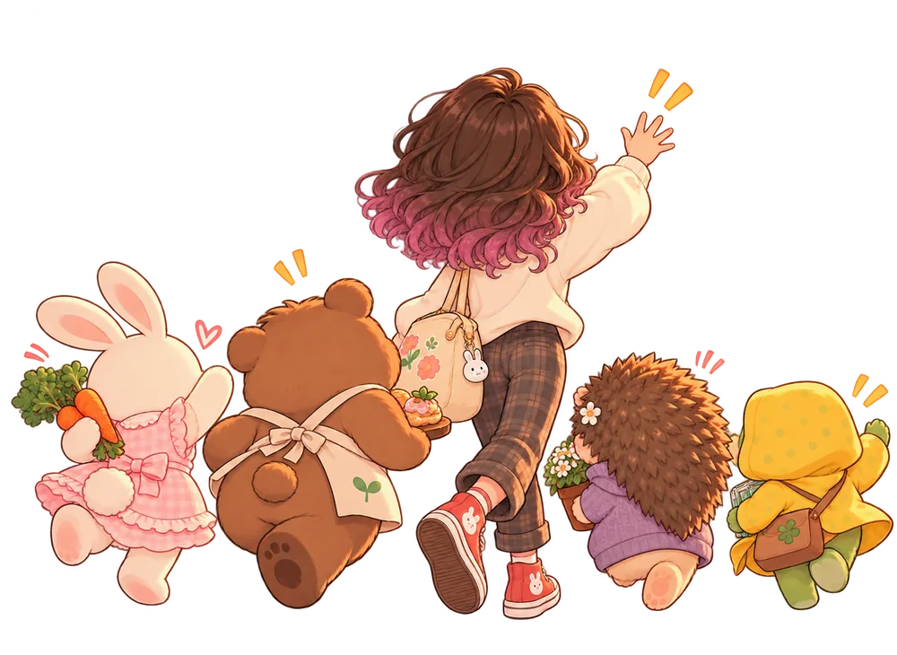

Cozy Cafe Oyunu
C++ ve Raylib ile sıfırdan geliştirdiğim, tüm çizimlerini kendim yaptığım piksel sanatı kafe oyunu.

Merhaba, ben
Fikirleri çalışan ürünlere dönüştüren bir bilgisayar mühendisi.
Yapay zeka, backend, bilgisayarlı görü ve yazılım projeleri — gerçek dünya otomasyonundan deneysel oyunlara.

C++ ve Raylib ile sıfırdan geliştirdiğim, tüm çizimlerini kendim yaptığım piksel sanatı kafe oyunu.

EĞİTİM
Bilgisayar Mühendisliği (Lisans)
TÜBİTAK 2209-A kapsamında desteklenen Yüz Felci İzleme ve Rehabilitasyon Sistemi. MediaPipe Face Mesh ile yüz asimetrisini kişinin kendi nötr yüzüne göre ölçen, React Native ve FastAPI mimarisinde bir mobil uygulama geliştirdim; çalışma makale olarak yayına hazırlanıyor.
Yabancı dil: İngilizce (B1+)
BAŞARILAR VE SERTİFİKALAR
Denemeler, ders projeleri ve geliştirdiğim sistemlerden seçkiler.
Aramanızla eşleşen proje bulunamadı. Başka bir terim deneyin.
AÇIK OLDUĞUM ROLLER
Konuşalım.
